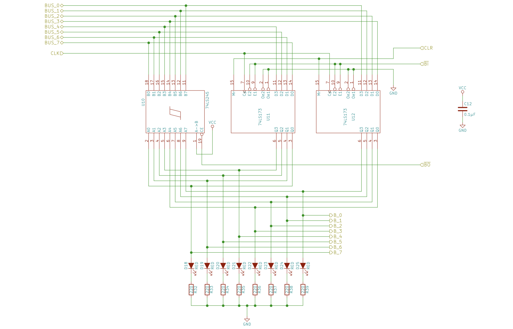

TD-8: 3. hafta raporu
74HC entegrelerle breadboard üzerinde kendi 8-bit bilgisayarımız. Sonunda C ile yazılmış Snake oyunu onda çalışacak.
İlerleme
YazılımDeniz
- Komut seti ve ROM üreticileri bitti
- Assembler bitti
- Emülatörler ve testler bitti
- Çarpma, bölme, yazdırma kütüphanesi bitti
- Devre test vektörü üretici yeni bitti
- C derleyicisi sürüyor
- Arduino iz ve yükleme yazılımı Aralık
- Snake oyunu (C) Mart – Nisan
DonanımAbdurrahman
- M1 saat modülü sürüyor
- M4 registerlar (A, IR) ve ALU sürüyor
- M3 adres, M2 kontrol, M5 bellek Kasım
- İşlemcinin birleştirilmesi Kasım
- M6 VGA Aralık
- M7 PS/2 klavye Aralık
- KiCad şemaları, yerleşim planı Aralık
- Breadboard yapımı ve testleri Ocak – Mayıs
Çubuklar işlerin plandaki sürelerine göre bölündü (SISTEM-PLANI bölüm 13–14). Yüzde yalnızca biten işleri sayar: bir modül, testleri geçince biter.
Yaptık
- Sistem planı ve TD-8 komut setibütçe 17.503 TL · 53 komut · seçimlerin araştırması
- Simülasyon yazılımı ve kütüphaneassembler, 2 emülatör, çarpma ve bölme
- Saat modülü Proteus'ta kurulduAbdurrahman
- Java ve Digital kurulduücretsiz devre simülatörü
- Test vektörü üreticisidevre testleri için doğru cevap tabloları
- Proteus için ROM dosyalarıAbdurrahman'ın sorusu üzerine
- 54 otomatik testgeçen hafta 34 · hepsi geçiyor
Yapıyoruz
- Kontrol ünitesi ve bellek modüllerinin Digital testleriDeniz
- C derleyicisiDeniz · 6. hafta raporunda
- Saat modülü testleriAbdurrahman · ilk kilometre taşı (K1)
- Register şemalarını TD-8'e uyarlamaAbdurrahman
- Flash çip siparişi16 Kasım'a kadar
Yapacağız
- Bütün işlemcinin simülasyonda birleştirilmesiKasım sonu
- VGA ekran ve klavye simülasyondaAralık
- Breadboard'da kurulumOcak – Haziran 2027
- C ile yazılmış Snake demosuMayıs 2027
Kilometre taşları
- 9 Kas · geciktiSaat modülünün testleri geçiyor
Proteus testleri sürüyor - 23 Kas · sıradakiİşlemci simülasyonda emülatörle sıfır farkla çalışıyor
- 14 AraSimülasyonda ekrana yazı
- 3 OcaTasarım donduruldu, yapıma hazır
- Nisan 2027Breadboard'da işlemci program çalıştırıyor
- Mayıs 2027Snake demosu çalışıyor
Deniz
Simülasyon yazılımı, komut seti ve C derleyicisi. Bu hafta: devre simülatörü Digital'in kurulumu, test vektörü üreticisi ve Proteus için ROM dosyaları. Notlar: Taha/hafta3.
Özet
| İş | Sonuç |
|---|---|
| Programlar | Java (Temurin JDK 21) ve Digital 0.31 kuruldu, komut satırından örnek devrelerle denendi |
| Test vektörleri | 5 çeşit: ALU, mikrokod, kod çözücüler, adres çözme, bütün işlemcinin çevrim çevrim izi |
| Proteus ROM dosyaları | sim/build/proteus/ altında 64 KB'lık .bin ve Intel HEX |
| Abdurrahman'ın soruları | İkisi de cevaplandı: ROM dosyası biçimi ve sinyal adları |
| C derleyicisi | Üzerinde çalışılıyor; 6. hafta raporunda anlatılacak |
| Otomatik testler | 34'ten 54'e çıktı, hepsi geçiyor |
İndirilen programlar
| Program | Sürüm | Ne için |
|---|---|---|
| Eclipse Temurin JDK | 21.0.13 | Digital'in çalışması için Java |
| Digital (hneemann) | 0.31 | Ücretsiz devre simülatörü: 74xx kütüphanesi, test bileşeni |
- Deponun dışına kuruldu (
Desktop\bitirme ödevi\araclar\). Yönetici izni gerekmedi, sistem ayarlarına dokunulmadı. Masaüstündeki "Digital (TD-8)" kısayolu programı açıyor. - Komut satırından örnek devrelerle çalıştığı doğrulandı:
araclar\digital-cli.cmd test -circ devre.dig. - Plandaki açık soru kapandı: kullandığımız 23 çeşit 74HC entegresinin hepsi Digital'in kütüphanesinde var (191, 166, 540 ve 688 dahil).
- Abdurrahman Proteus kullanıyor. Proteus ücretli olduğu için buraya kurulmadı; onun için Proteus'a uygun ROM dosyaları hazırlandı (aşağıda).
Test vektörleri
Test vektörü, "bu girişleri verirsen şu çıkışları görmelisin" diyen satırlardan oluşan bir tablo. Devre simülatörü (Digital ya da Proteus) tabloyu satır satır dener; tutmayan bir satır devrede hata demektir. Doğru cevapları emülatör üretiyor. Komut: py cli.py vectors <tür>.
alu: ALU, istenen sayıda rastgele işlem (ör.-n 10000).urom: mikrokod; adım, komut ve flag'lerden kontrol kelimesi.cs: kod çözücüler, tam tablo (512 satır).decode: adres çözme; her bellek bölgesinin ilk ve son adresi.trace: bütün işlemci; bir programın her çevriminde adres, veri ve kontrol kelimesi.
> py cli.py vectors alu -n 3
# M4 ALU testi: girişler OP A B Cin Zin, çıkışlar R Z C N V OP A B Cin Zin R Z C N V 4 0x20 0x82 0 1 0x9D 0 0 1 1 24 0xE6 0xF1 1 0 0xF1 0 1 1 0 3 0xF9 0x0E 1 1 0xEB 0 1 1 0
Her satır bir deneme: soldaki beşi giriş (işlem kodu, A, B, gelen elde ve Z bayrağı), sağdaki beşi beklenen çıkış (sonuç ve Z, C, N, V bayrakları).
İz (trace), bir programın her çevriminde adres yolunda, veri yolunda ve kontrol hatlarında ne olduğunun kaydı. İki izi karşılaştırıp farkın başladığı ilk çevrimi söyleyen bir fonksiyon da yazıldı (compare_traces, sim/td8/vectors.py); breadboard'da Arduino'nun kaydettiği iz de bununla karşılaştırılacak. --format csv ile bütün tablolar Excel'de açılabiliyor.
Proteus için ROM dosyaları
py cli.py roms artık sim/build/proteus/ klasörünü de dolduruyor:
- Eski
build/*.hexdosyaları Digital'in biçiminde; Proteus bunları okuyamaz. - Yeni
build/proteus/*.binve*.hex(Intel HEX) Proteus içindir. - Dosyalar 64 KB. Proteus'ta 128 KB'lık flash modeli büyük olasılıkla yok, 27C512 (64 KB) kullanılabilir. Devrede flash'ların en üst adres bacağı (A16) zaten 0'a bağlı, yani yalnız alt 64 KB kullanılıyor.
Proteus tarafı henüz denenmedi (Proteus bende kurulu değil, bilgi forumlardan). Abdurrahman deneyip sonucu yazacak.
Abdurrahman'ın soruları
- ROM'lara hangi dosya yüklenecek?
sim/build/proteus/klasöründeki.bindosyaları; olmazsa aynı adlı.hex. - Sinyal adları şemadaki etiketlerle aynı olsun: bunun için sinyal adları ve bacak bağlantıları listesi (
Tahadan-Abdurrahmana/TD8-baglanti-tablosu.md) iletildi.
Testler
| Test dosyası | Test | Neyi denetliyor |
|---|---|---|
| Önceki haftalar (6 dosya) | 34 | ALU, mikrokod, assembler, emülatörler, runtime, VGA |
| test_vectors.py | 20 | vektör üreticisi, Intel HEX |
| Toplam | 54 |
Gelecek hafta
- Kontrol ünitesi (M2) ve bellek (M5) modüllerini Digital'de test etmek.
- C derleyicisine devam.
Abdurrahman
Devre modüllerini Proteus'ta kuruyor ve test ediyor. Kendi notları: Abdurrahman klasörü.
Bu hafta yeni not gelmedi. Son not 6 Kasım (2. hafta, register şemaları). Aşağıda önceki haftaların kısa özeti ve bu hafta onun için hazırlananlar var.
Önceki haftalar
1. hafta, saat modülü (M1): Proteus'ta simüle edildi: 4 MHz osilatör, iki flip-flop ile 4 faz, işlemci saati 1 MHz. Testleri henüz paylaşılmadı.
2. hafta, register şemaları: A, B ve komut registerı (IR) için Proteus şemaları çizildi. Her birinde iki 74LS173 (4-bit register), veri yoluna çıkış için bir 74LS245, kontrol hatları ve içeriği göstermek için 8 LED var. Yükleme ve veri yolu testleri henüz yapılmadı.

Şemaları TD-8 planına uyarlamak gerekiyor
Şemalar klasik SAP-1 yapısında. TD-8'de (SISTEM-PLANI bölüm 5.1):
- B registerı yok; ALU'nun ikinci girişi doğrudan veri yolu.
- A registerı bir 74HC377; girişini ALU'nun sonucundan alır, veri yoluna 74HC245 ile çıkar.
- Komut registerı (IR) bir 74HC377; 8 bitin hepsi mikrokod ROM'unun adresine gider, veri yoluna çıkmaz.
- Entegre ailesi 74HC; yükleme hatları kontrol ünitesinin kod çözücüsünden gelir.
Abdurrahman için hazırlananlar
İki sorusuna cevap olarak. Sorular ve cevaplar: Abdurrahmandan-Tahaya.
Proteus için ROM dosyaları
.bin kullanılacak, ama sim/build/proteus/ klasöründeki 64 KB'lık dosyalar (eski build/*.hex Digital'in biçiminde, Proteus okuyamaz). Proteus'ta 128 KB'lık flash modeli büyük olasılıkla yok; yerine 27C512 (64 KB) konur. Dosyaları py cli.py roms üretiyor.
| Proteus'taki ROM | Yüklenecek dosya |
|---|---|
| Mikrokod ROM'ları (3) | build/proteus/urom0.bin, urom1.bin, urom2.bin |
| ALU ROM'ları (2) | build/proteus/alu_lo.bin, alu_hi.bin |
| Program ROM'u | py cli.py asm examples/merhaba.asm --ihex → merhaba.bin (32 KB) ve merhaba.hex |
Deniz'de Proteus kurulu olmadığı için bu adım denenmedi; bilgi forumlardan. Hangi dosyanın çalıştığını Abdurrahman deneyip yazacak.
Sinyal adları
Şemadaki etiketler ortak olsun diye sinyal adları ve bacak bağlantıları listesi iletildi: Tahadan-Abdurrahmana/TD8-baglanti-tablosu.md. Proteus'ta etiketler bu adlarla verilirse modüller birleşirken ad uyuşmazlığı olmaz. Şemayı çizmek, çalıştırmak ve test etmek Abdurrahman'da.
Modül testleri için hazır tablolar
py cli.py vectors alu,urom,cs(kod çözücüler),decode(adres çözme). Her satır "bu girişleri ver, şu çıkışları görmelisin" diyor;--format csvile Excel'de açılır.- Bütün işlemci için
py cli.py vectors trace examples/merhaba.asm --format csv: her çevrimde adres yolunda, veri yolunda ve 24 kontrol hattında ne olması gerektiği (573 satır). Proteus'ta aynı program çalıştırılıp karşılaştırılabilir.
Sıradaki adımlar
- Saat modülünün 4 testi (ilk kilometre taşı, K1): normal çalışmada CLK, LCLK ve WSTB dalga şekilleri; STOP = 1 iken C fazında durma; bekleme girişi 1 iken D fazında bekleme; GO ile tam bir çevrim, reset ile C fazına dönüş.
- Register şemalarını TD-8'e uyarlamak (A ve IR için 74HC377, F için 74HC161; B registerı yok) ve yükleme testlerini yapmak.
- M3 adres registerlarının (PC, AR, X, SP) şemaları, iletilen listedeki sinyal adlarıyla.
- Proteus'ta ROM yüklemeyi denemek (
.bin, olmazsa.hex) ve hangisinin çalıştığını Abdurrahmandan-Tahaya dosyasına yazmak.